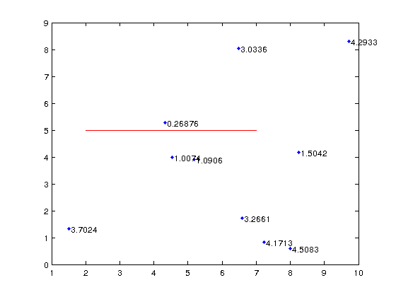
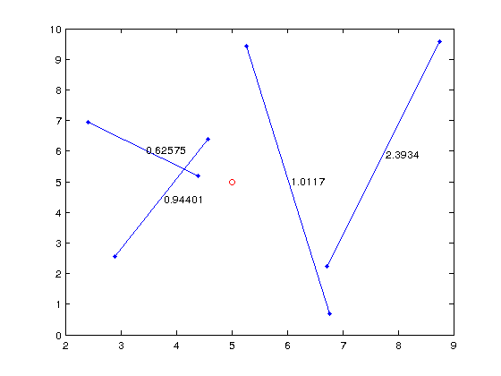

Dist_Point_LineSegment
| main | Tutorials | Functions | website |
Computes the minimum distance between a point and a line segment. The function is vectorized only for one point many lines or many points one line
Version : 1.0
Author : George Kourakos
email: giorgk@gmail.com
web : http://groundwater.ucdavis.edu/msim
Date 18-Mar-2014
Department of Land Air and Water
University of California Davis
Contents
Usage
dst = Dist_Point_LineSegment(px, py, L)
Input
px: [n x 1] x coordinates of point/s. n is the number of points. If n > 1 then the number of lines must be 1.
py: [n x 1] y coordinate of point/s. n is the number of points. If n > 1 then the number of lines must be 1.
L: [N x 4] line defined by two points. The points must be given as follows: [p1x p1y p2x p2y] where (p1x,p1y) are the coordinates of one point and (p2x, p2y) the coordinates of the other end of the line. N is the number of lines. If N > 1 then the number of points must be 1.
Output
dst: the distance between the point the the lines [N x 1] or the points and line.
Example
1st case: Many points one line
Create 10 points and one line
p = 10*rand(10,2); L= [2 5 7 5];
compute the distances between the line and the point
dst = Dist_Point_LineSegment(p(:,1), p(:,2), L)
dst =
4.1713
3.7024
3.2661
1.0906
4.2933
3.0336
4.5083
1.0074
0.2688
1.5042
Plot the points, the lines and the distances between them
plot(p(:,1),p(:,2),'.'); hold on plot([L(1,1) L(1,3)], [L(1,2) L(1,4)],'r') for i = 1:size(p,1) text(p(i,1),p(i,2), [' ' num2str(dst(i))]) end
2nd case: One point many lines
Create a point and 4 lines
p = [5 5]; L= 10*rand(4,4);
compute the distances between the lines and the point
dst = Dist_Point_LineSegment(p(1,1), p(1,2), L)
dst =
0.0922
4.6006
3.9227
1.2448
Plot the points, the lines and the distances between them
hold off plot(p(1,1),p(1,2),'or'); hold on plot([L(1,1) L(1,3)], [L(1,2) L(1,4)],'r') for i = 1:size(L,1) plot([L(i,1) L(i,3)], [L(i,2) L(i,4)],'.-') text((L(i,1) + L(i,3))/2, (L(i,2) + L(i,4))/2, [' ' num2str(dst(i))]) end